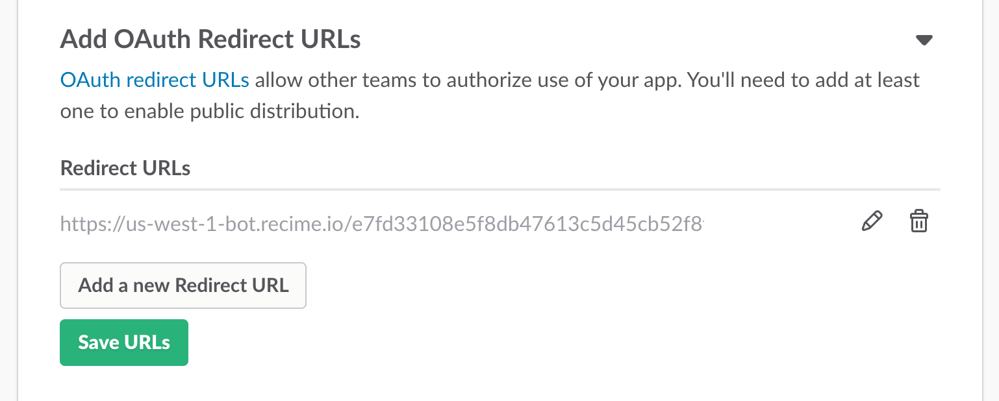
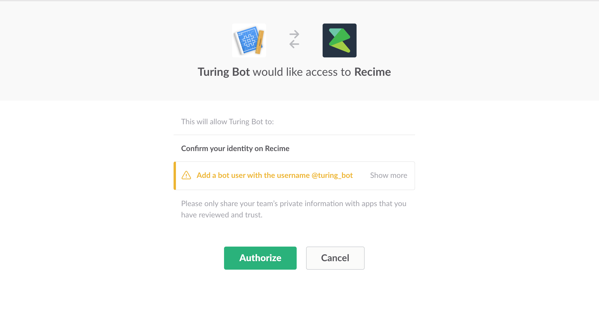

Manage Distribution¶
In order to distribute slack app with teams. First step is to add redirect URL to activate slack button or share link.

Under "Share Your App with Other Teams" set Recime bot enpoint as redirect URL.

Click "Save URLs"

This will generate the Add to Slack button and Share URL both of which will automatically initiate the OAuth flow.

Once successful, it will install the bot for the selected team and show you confirmation dialog like the following:

To distribute the bot publicly in slack apps directory, go to "Share Your App with Other Teams" and check "I’ve reviewed and removed any hard-coded information." under "Remove Hard Coded Information".
Click "Activate Public Distribution".